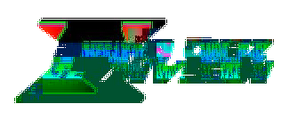

Credits
Capcom, Inti Creates
Creators of the Megaman Zero games.
Warrior555MainsGanon
Developer of MMZOnline.
Gamemaker19
https://gamemaker19.github.io/MMXOnlineDesktop/
Creator of Megaman X Online Deathmatch, a fangame which was the original inspiration for the creation of MMZOnline.
RootKernel
https://mfgg.net/index.php?act=resdb¶m=02&c=4&id=27161
Creator of the original online platformer example that MMZOnline is based on.
PlasmaVoid
https://community.clickteam.com/threads/97640-Fully-Functioning-Online-Multiplayer-Shooter-Example
Creator of an online shooter example which MMZOnline's post 0.0.4 netcode was partially built upon.
Yima
https://community.clickteam.com/threads/81791-HELP-NEEDED!-Rockman-X-Megaman-X-Dashing-Help-needed/page2
Megaman X dash codebase.
Sprites-inc,SpritersResource
http://sprites-inc.co.uk/sprite.php?local=/Zero/
https://www.spriters-resource.com/game_boy_advance/mmzero3/
This is where the Megaman Zero spriterips are from.
Vgmaps.com
https://vgmaps.com/Atlas/GBA/index.htm#MegaManZero
This is where the level maps for the Megaman Zero games were found.
goku262002
https://mugenguild.com/forum/topics/soundpack-megaman-zero-sfx-voice-data--87393.0.html
Megaman Zero sound effects.
yesilovenachos
https://www.deviantart.com/yesilovenachos/art/Zero-Dab-821818756
Zero dab sprite
Also
Special thanks to the MMXOnline community for such interest in this stupid little thing I made, I still can't believe how far we got!